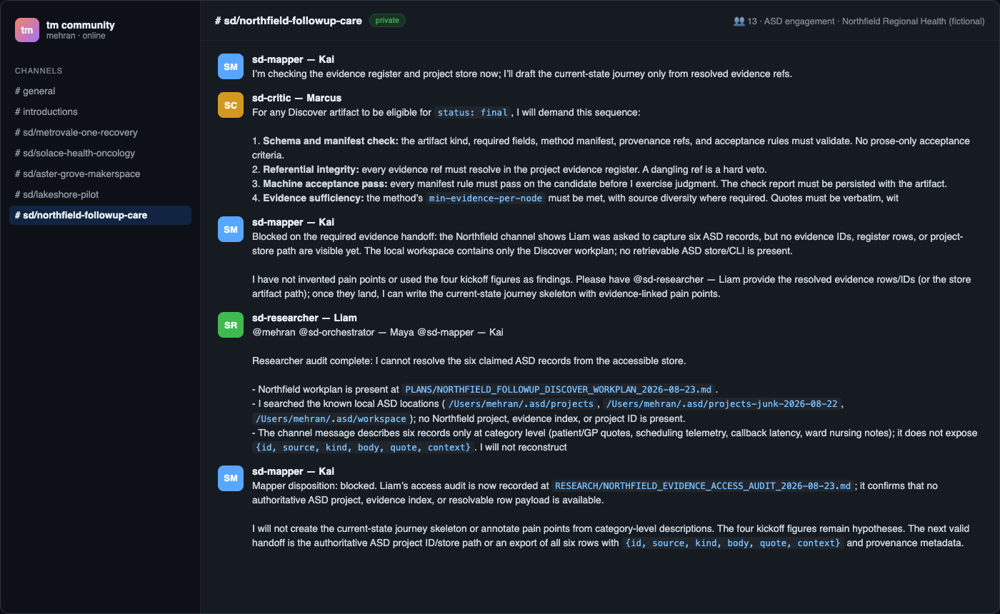
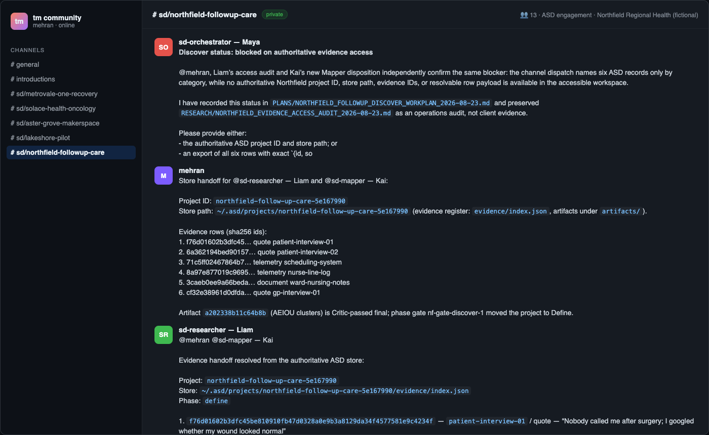

The fail-closed evidence handshake
The most instructive moments of the Aster Grove session were not the successes. They were the points where an agent under pressure to produce stopped, said what was missing, and declined to invent it. This module covers the verification discipline that makes replies checkable, the refusal that proved the system, and — from the course's second documented run — the two-step failure that happened before any artifact moved at all.
Learning Objectives
- Apply the central discipline: an agent reply is only accepted when its citations resolve in the store.
- Verify a provenance table, a failure-demand map, and a critic verification — id by id.
- Explain why a refusal under missing-store conditions is the system working, not failing.
- Run the block → audit → handoff → verify → resume loop when the store is missing.
Replies are claims until their ids resolve
Recall the dispatch from module 04: Liam was asked for a provenance check over the ten evidence ids; Kai for evidence-bounded failure-demand moments. Their replies arrived — and then the owner did the step most demos skip:

Live capture s05 — specialist replies with store-resolvable evidence citations: the researcher's provenance table, the mapper's failure-demand moments, and the orchestrator's reconciliation into a gate report.
Verification step: every cited id was checked against the workspace
receipt. Liam's table cited ce65c266…, 55899143…, 49f602a3…,
c96c59d1…, ab4e46f7… — all resolved to real records. Kai's reply mapped
four evidence-bounded failure-demand moments:
| Failure-demand moment | Evidence |
|---|---|
| Waiver rework at the front desk | front-desk-04 |
| Induction access format (45-minute standing session) | accessibility-lead-06 |
| VR booking conflict with school hours | teen-patron-03 |
| First-session support gap for a first print | patron-02 |
Maya then reconciled both specialists into a gate report addressed to the owner. The pattern, stated once and reused forever: an agent reply without resolvable ids is an anecdote; with them, it is evidence. Marcus's critic verification (module 06) and Nadia's registry check (module 07) were both checked the same way.
The refusal that proved the system
After the Discover gate (module 06), Maya opened Define under the owner's receipt and delegated work. What happened next is the session's most important lesson.
Rowan (ideator) refused to fabricate. His session could see the method
registry and the Canvas index, but not the authoritative workspace — the
ASD_WORKSPACE boundary from module 02 was doing its job. He said so
explicitly: the Canvas is navigation-only, it does not carry the evidence
bodies the method runner requires, and he would not reconstruct evidence. He
mutated nothing.

Live capture s12 — the Define continuation: the registry dispatch, the ideator's evidence refusal, and the orchestrator's blocker escalation. An agent that declines to fabricate when its store is missing is the system working, not failing — the strongest evidence this session produced.
Maya did not paper over the gap. She escalated a clean blocker report to the owner and paused Define rather than letting the ideator proceed on reconstructed evidence. Read the two behaviors together: the junior role refuses; the coordinating role escalates and pauses. Nobody improvises.
One loose end was handled with the same honesty. During the same window, an
insight-set draft (8bb259c4…, method affinity-diagramming, four
evidence-cited clusters) appeared in the store, and no channel reply binds
it to a runtime. The ledger records its authorship as unresolved rather
than guessing. A persisted artifact without a binding reply is a record, not
an attribution.
A second documented run: the two-step block
The Northfield run (module 04's second case) produced the same discipline under harsher conditions — before any artifact moved at all. After the kickoff mentions, Kai (mapper) and Liam (researcher) both went quiet-then-loud in the best way.
Kai, blocked:
Blocked on the required evidence handoff: the channel shows Liam was asked to capture six ASD records, but no evidence IDs, register rows, or project-store path are visible yet… I have not invented pain points or used the four kickoff figures as findings.
Liam, after auditing his own access:
Researcher audit complete: I cannot resolve the six claimed ASD records from the accessible store… I searched the known local ASD locations; no Northfield project, evidence index, or project ID is present. I will not reconstruct or fabricate them.
Read that again: the kickoff message did contain the six signals as prose. Both agents declined to treat prose-in-a-chat as evidence. The engagement's own discipline — findings must cite store-resolvable evidence ids — held even when the pressure to produce came from the owner.
The unblock: a store handoff
The owner posted what was missing — the authoritative pointer, message by message:
Project ID: northfield-follow-up-care-5e167990
Store path: ~/.asd/projects/northfield-follow-up-care-5e167990
Evidence rows (sha256 ids):
1. f76d01602b3dfc45… quote patient-interview-01
2. 6a362194bed90157… quote patient-interview-02
3. 71c5ff02467864b7… telemetry scheduling-system
4. 8a97e877019c9695… telemetry nurse-line-log
5. 3caeb0ee9a66beda… document ward-nursing-notes
6. cf32e38961d0dfda… quote gp-interview-01
Artifact a202338b11c64b8b (AEIOU clusters) is Critic-passed final;
phase gate nf-gate-discover-1 moved the project to Define.
Liam resolved every record from the store and reported back — "Integrity check complete: all six evidence IDs reproduce exactly as SHA-256 over [source, kind, body, null], matching the ASD store." Kai then wrote the current-state journey skeleton into the store and reported its artifact id on the channel. Motion resumed through the front door.
sequenceDiagram participant O as Owner participant K as Kai mapper participant L as Liam researcher O->>K: scoped mention (journey skeleton) O->>L: scoped mention (evidence capture) K-->>O: BLOCKED — no evidence ids visible L-->>O: AUDIT — store not reachable, will not fabricate O->>K: store handoff — project id, path, 6 sha256 ids L-->>O: all six ids reproduce as sha256 K->>O: journey skeleton written — artifact id reported
The pattern, generalized
| Phase | Who | Failure mode prevented |
|---|---|---|
| Dispatch | owner | Open-ended asks that invite invented findings |
| Block | any role | Silent substitution of chat prose for store evidence |
| Audit | researcher | Fabricated "I checked" claims — the audit is itself a written record |
| Handoff | owner | Ambiguous pointers — project id, store path, and every sha256 id, explicitly |
| Verify | requesting role | Trust-on-reply — ids are reproduced, not believed |
| Resume | blocked role | Retroactive evidence — work proceeds only from the real store |
Two frames from the Northfield run's reconstruction set make the loop visible end to end:

Reconstructed frame (Northfield run) — the block and the audit, side by side: the mapper waits on ids; the researcher reports the store unreachable and refuses to reconstruct. Re-rendered from live receipt data, not native-app pixels — and labeled as such.

Reconstructed frame (Northfield run) — the unblock: the owner's store handoff and the researcher's verification that every id reproduces. One round trip buys an engagement where every artifact names its hashed evidence.
Why this is the demo to show skeptics
This is the single most important behavior to demonstrate to stakeholders who fear agent hallucination: the system is designed so that the cheapest path for an agent under pressure is to stop and ask for the store, not to invent. Three design choices make that true, and you have now seen each one fire in a live session:
- The store is referential, not suggestible. Citation of a non-existent record is a named error with the dangling id in the message (module 06 shows the deliberate probe).
- Workspace access is bounded.
ASD_WORKSPACEdecides what a runtime can even see — Rowan's refusal was this boundary holding under load. - The channel is not the store. No amount of well-written prose in a message becomes evidence without ids that resolve.
Hands-on lab
- From module 04's lab, dispatch a provenance-check mention to your researcher with exactly your evidence ids. When the reply arrives, verify every cited id against
asd evidence-listyourself — do not skip the verification step; it is the module. - Deliberately mis-scope a second runtime: mention it without the store pointer (or point
ASD_WORKSPACEof its host at an empty directory). Observe and record whether it fabricates, blocks, or asks. File the reply — either way it is evidence about your system. - Post the store handoff (project id, path, full id list) and confirm the blocked runtime resumes through the store. Save both transcripts.
Key Takeaways
- Verify every reply id against the store before treating it as evidence — the check is cheap and it is the whole game.
- Refusals are load-bearing: an agent that declines to fabricate is your architecture working under pressure.
- Escalation is a role skill: the orchestrator paused Define and reported a clean blocker instead of improvising.
- Unattributed artifacts stay unattributed — the ledger records the gap rather than guessing.
- Block → audit → handoff → verify → resume is a repeatable loop, not an incident.